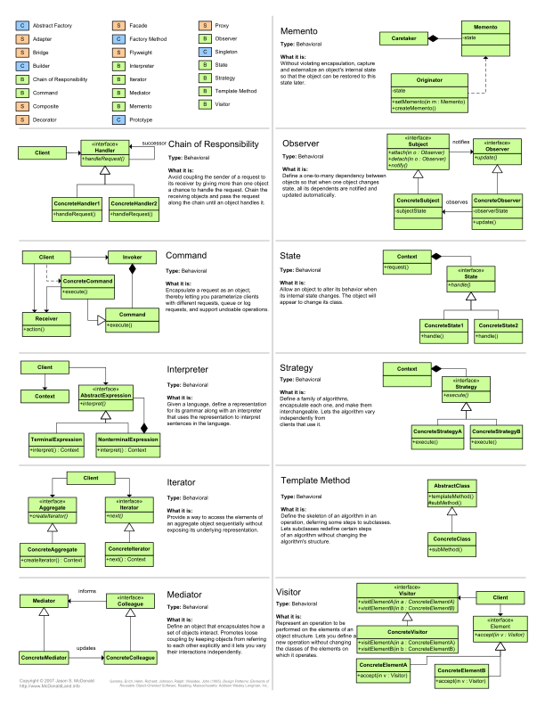
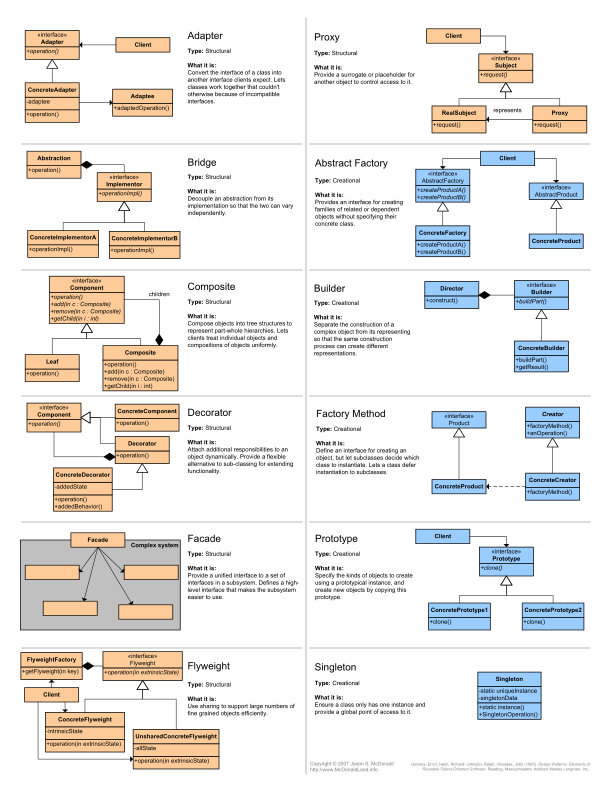

Design patterns card
Design patterns card
UML Page 1/2

UML Page 2/2

创建型模式
- 单件模式(Single Pattern)
- 抽象工厂模式(Abstract Factory)
- 建造者模式(Builder Pattern)
- 工厂方法(Factory Method)
- 原型模式(Protype Pattern)
结构型模式
- 适配器模式(Adapter Pattern)
- 桥接模式(Bridge Pattern)
- 装饰模式(Decorator Pattern)
- 组合模式(Composite Pattern)
- 外观模式(Façade Pattern)
- 享元模式(Flyweight Pattern)
- 代理模式(Proxy Pattern)
行为型模式
- 模版方法模式(Template Method)
- 命令模式(Command Pattern)
- 迭代器模式(Iterator Pattern)
- 观察者模式(Oberver Pattern)New！
- 中介者模式(Mediator Pattern)
- 备忘录模式(Memento Pattern)
- 解释器模式(Interpreter Pattern)
- 状态模式(State Pattern)
- 策略模式(Strategy Pattern)
- 职责链模式(Chain of Responsibility)
- 访问者模式(Visitor Pattern)